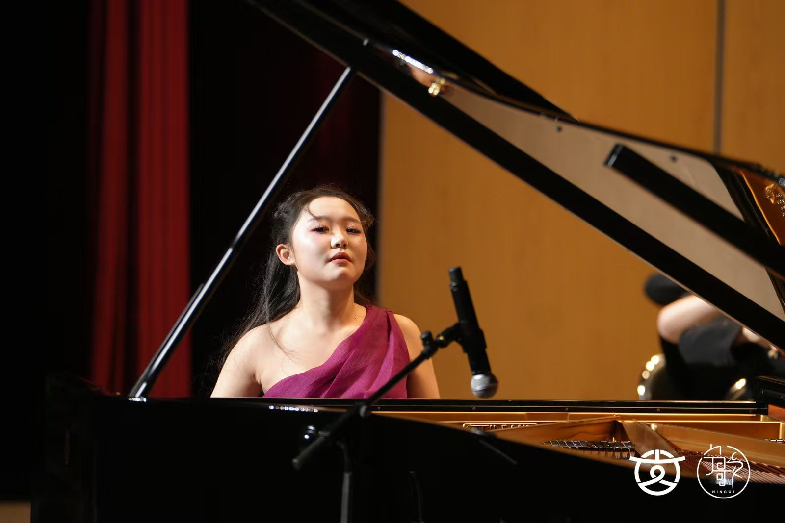

Johannes Brahms
Ballade No. 1 in D minor, Op. 10, No. 1
“Edward”

MUSIC & MATHEMATICS
Herong Bai is a pianist from Ningxia, northwestern China, who began studying piano at the age of four and currently studies with Cliburn Artist Fei-Fei Dong.
Herong Bai · Piano
Johannes Brahms
“Edward”
Edvard Grieg
Piano Concerto in A minor, Op. 16
Ningxia Symphony Orchestra · Qu Xin, conductor
Ningxia People’s Theatre · 8 February 2026
BMC ETUDES PROJECT · 2026
Parker Concert Hall · 23 July 2026
Pianists collaborate directly with living composers to premiere new études written for the project.
Selected by Jihye Chang as one of ten pianists and the only high school pianist in the 2026 project.
Ludwig van Beethoven
“Waldstein” · I. Allegro con brio
Johann Sebastian Bach
The Well-Tempered Clavier, Book II
Frédéric Chopin
I. Grave – Doppio movimento
For performances, musical collaborations and community education.
herongbai@gmail.com